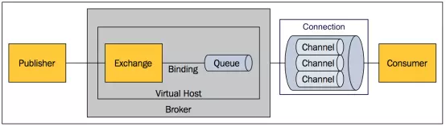

RabbitMQ特性
1, 支持多种消息协议（Multi-protocols）
支持AMQP，STOMP，MQTT，HTTP和WebSockets
2, 灵活的路由，多种交换类型（Flexible routing, multi-exchange）
3, 消息队列发送确认（ACK）
4, 多语言，跨语言编程（Go，Python，Java）
5, 集群及分布式部署
6, 丰富的工具和插件
7, 提供基于HTTP的管理和监控界面API
AMQP基本工作机制

1, Message
消息，消息是不具名的，它由消息头和消息体组成。 消息体是不透明的，而消息头则由一系列的可选属性组成，
这些属性包括routing-key（路由键）、priority（相对于其他消息的优先权）、delivery-mode（指出该消息可能需要持久性存储）等。
2, Publisher
消息的生产者，也是一个向交换器发布消息的客户端应用程序。
3, Exchange
交换器，用来接收生产者发送的消息并将这些消息路由给服务器中的队列。
4, Binding
绑定，用于消息队列和交换器之间的关联。一个绑定就是基于路由键将交换器和消息队列连接起来的路由规则，所以可以将交换器理解成一个由绑定构成的路由表。
5, Queue
消息队列，用来保存消息直到发送给消费者。它是消息的容器，也是消息的终点。一个消息可投入一个或多个队列。消息一直在队列里面，等待消费者连接到这个队列将其取走。
6, Connection
网络连接，比如一个TCP连接。
7, Channel
信道，多路复用连接中的一条独立的双向数据流通道。信道是建立在真实的TCP连接内地虚拟连接，AMQP命令都是通过信道发出去的，
不管是发布消息、订阅队列还是接收消息，这些动作都是通过信道完成。因为对于操作系统来说建立和销毁 TCP 都是非常昂贵的开销，所以引入了信道的概念，以复用一条 TCP 连接。
8, Consumer
消息的消费者，表示一个从消息队列中取得消息的客户端应用程序。
9, Virtual Host
虚拟主机，表示一批交换器、消息队列和相关对象。虚拟主机是共享相同的身份认证和加密环境的独立服务器域。
每个vhost本质上就是一个mini版的RabbitMQ服务器，拥有自己的队列、交换器、绑定和权限机制。vhost是AMQP概念的基础，必须在连接时指定，RabbitMQ默认的vhost是/。
10, Broker
表示消息队列服务器实体。